62DAC: целостность сигналов
Что на этой плате ограничивает два AD1862 и что изменить, чтобы получить от них все 20 бит. Каждое число здесь получено бесплатными инструментами на реальной разводке из KiCad.
В каком состоянии плата
Разводка в основе правильная: два сплошных земляных слоя, короткие суммирующие узлы, развязка в 2–3 мм от каждого вывода питания AD1862. Реальные ограничения — тактирование выборок от Pico, разводка и управление общими линиями тактирования и защёлки, а также скорость и шум ОУ в каскаде I/V.
паразитные составляющие −75…−80 dBFS (тон 10–20 кГц)
точная частота: нет
CLK на U1: 13,9 пс/мВ
точка-точка: 0,35 пс/мВ
с 220 пФ: −103…−125 dBFS
OPA828: −139…−142 dBFS
поменять LE и D_R местами в шине: ~в 5 раз меньше
OPA828, 3 кОм: 122,2 дБ(A)
AD1862: ~120 дБ
с добавленным 10 мкФ X7R: ~0,02 Ом
LT3045 0,33 мкВ · LM317 + CADJ 53 мкВ
LM317 без него 509 мкВ
худший обратный выброс 2,24 В > VIH 2,0 В
1/200–1/90 МЗР·выборки
фронты LE и данных: ≤ 0,6 фКл
(1 МЗР на выходе ≈ 2,7 мкВ)
общий сдвоенный ОУ: −86…−101 дБ
LM317 без CADJ: пик 0,9 Ом на 3,5 кГц
Изменения по соотношению пользы и труда
Изменения в прошивке ничего не стоят и бьют по самому большому эффекту, поэтому они первые. У каждого пункта указан источник: моделирование этой разводки, diyAudio (номера сообщений в ветке форума об AD1862, № 354078) или даташит.
- Тактировать PIO от частоты, точно кратной частоте выборки
Установите clk_sys 110,25 МГц для 44,1/88,2/176,4 кГц (PLL: REFDIV 2, FBDIV 147, выходные делители 4 и 2; VCO 882 МГц) или 129,6 МГц для 48/96/192 кГц (VCO 1296 МГц, ÷5÷2). Напишите программу PIO так, чтобы каждая выборка занимала ровно 2500 (или 2700) системных тактов при целочисленном делителе. Обе частоты в пределах номинала RP2040 133 МГц, меняется только прошивка.
При 125 МГц из SDK и дробном делителе фронты LE гуляют на 4–7 нс по фиксированному шаблону, давая паразитные составляющие −75…−80 dBFS на тоне 10–20 кГц. С точной частотой эта ошибка равна нулю; остаётся случайный джиттер PLL, которого в даташите нет. Смена семейства частот выборки требует перенастройки системного PLL; USB работает от своего PLL и не затрагивается. Частоту тогда задаёт ЦАП, поэтому USB-аудио должно работать в асинхронном режиме с конечной точкой обратной связи.
моделирование (модель тактирования) · даташит RP2040 §2.18, §3.5.5
- Заменить C31 и C36 с 47 пФ на 220 пФ C0G или взять более быстрый ОУ
С OPA134 каждая полномасштабная ступенька уводит суммирующий узел примерно на полвольта от 0 В, и ОУ упирается в скорость нарастания. И обобщённая модель, и собственная модель OPA134 от TI показывают, что 220 пФ это устраняют: ступенька замедляется примерно до 9 В/мкс, ниже 20 В/мкс у OPA134, а угловая частота каскада I/V смещается с 2,4 МГц на 520 кГц, всё ещё далеко выше звукового диапазона. С OPA828 менять ничего не нужно.
моделирование (модель I/V в ngspice + PSpice-модели TI)
- Останавливать тактирование до спада LE и держать шину неподвижной в тишине
Выдвигать 20-битное слово с выравниванием вправо, остановить CLK, удерживать DATA, затем опустить LE через 3–4 битовых периода. В тишине держать CLK, LE и DATA неподвижными. Программа PIO делает это бесплатно.
Тогда смоделированная наводка CLK→LE в 25–73 мВ никогда не совпадает с фронтом LE, и полке от Т-разветвления нечего превращать в джиттер момента выборки. Сборщики в ветке измерили остаток на частоте выборки, эквивалентный примерно 1 мкА, который исчезает при остановке тактов.
моделирование · diyAudio #3957, #4277, #6513, #6533–6534
- Оставить выводы RP2040 с медленной скоростью нарастания и током 4 мА (по умолчанию)
Фронт 3 нс снижает чувствительность к джиттеру на U1 при Т-разветвлении с 13,9 до 1,15 пс/мВ на CLK и с 3,8 до 1,1 пс/мВ на LE. Заодно наводка CLK→LE падает примерно с 72 до 28 мВ. Не включайте быстрый slew на этих четырёх выводах.
моделирование (ngspice + openEMS)
- Дать каждому ЦАП свой вывод LE, а лучше и свой CLK
Развести два GPIO Pico вместо одного, каждый через свой последовательный резистор возле Pico. При токе 4 мА на этих трассах 67 Ом подходит примерно 27 Ом. Side-set в PIO переключает оба вывода в одном такте, так что ЦАП остаются синхронными. Оба ЦАП тогда видят один чистый фронт с 0,35 пс/мВ, а резонанс дерева на 405 МГц исчезает.
Чтобы обойтись одним выводом, используйте сбалансированное Т-разветвление: удлините ветвь к U1 до длины ветви к U2 (около 65 мм каждая) и замените 33 Ом на 0 Ом. Собственное выходное сопротивление Pico, около 40 Ом, тогда примерно согласовано с двумя параллельными ветвями, и оба ЦАП видят чистый фронт. Последовательная цепочка с окончанием на конце при штатном токе хуже, чем сейчас.
моделирование (ngspice) · 2 резистора и 2 короткие трассы или меандр
- Поменять местами LE и D_R в шине, чтобы между CLK и LE шла линия данных
Сейчас CLK и LE идут рядом с шагом 0,7–1,2 мм примерно на 60 мм. Если между ними пустить D_R, шаг удваивается, и модель связанных линий, сверенная с полноволновым расчётом всей платы, даёт примерно в 5 раз меньшую наводку CLK→LE. Заземлённая защитная трасса с переходными отверстиями даёт чуть больше (около 7 раз). Если тактирование остановлено, D_R во время спада LE неподвижна, так что её собственные наводки не важны.
моделирование (2D-решатель поля + ngspice) · без новых деталей
- Последние 4 дБ шума: OPA828 со встроенным резистором обратной связи AD1862 на 3 кОм
Соедините вывод 10 AD1862 (RF, сейчас не подключён) с выходом ОУ и уберите R8 и R9. Так OPA828 даёт 122 дБ(A) против 116 дБ(A) у OPA134 с 1,4 кОм, а выход становится 2,1 В скз. Он выпускается только в SOIC или VSSOP, поэтому в DIP-панельку нужен переходник. Альтернативы: ADA4625-1 (тоже SOIC), который по модели ADI не уступает OPA828; OPA1611 со 150 пФ для минимального шума; или OPA627 с 82 пФ, который встаёт прямо в панельку. Оставьте по одному одиночному ОУ на канал и 47 пФ, если ОУ не упирается в скорость нарастания.
моделирование (ngspice и LTspice; модели производителей для девяти ОУ)
- Перетактировать LE у ЦАП от малоджиттерного аудиогенератора
Подайте аудиогенератор 45,1584 или 49,152 МГц (или вдвое ниже) на GPIO20 (GPIN0, до 50 МГц) и синхронизируйте от него PIO: либо clk_sys от этого входа, либо PIO ждёт его фронтов. Поставьте рядом с ЦАП сдвоенный D-триггер (класса 74LVC74), тактируемый тем же генератором, чтобы каждый фронт LE брался от генератора, а не от PLL и выходов Pico.
Каждая половина триггера ведёт свой ЦАП по короткой трассе, что заодно убирает Т-разветвление. При джиттере генератора около 2 пс ошибка момента выборки остаётся ниже −135 dBFS даже для полномасштабного тона 20 кГц.
моделирование (модель тактирования) · даташит RP2040 §2.15 · diyAudio #870, #944, #1787
- Добавить 10 мкФ X7R рядом с каждым 100 нФ на ±VL и ±VS
Это выравнивает область 0,2–0,5 Ом и убирает антирезонанс на 4,5 МГц: импеданс от 200 кГц до 5 МГц падает примерно до 20 мОм. Остаётся небольшой горб 0,3 Ом около 100 кГц, всё равно далеко выше звукового диапазона.
моделирование (модель PDN в ngspice)
- Вкладываться в стабилизаторы, а не в ёмкость на плате
Ниже 20 кГц импеданс шины задают стабилизатор и провода к нему, а не плата. По моделям ADI в LTspice на выводе +VS AD1862 будет 0,33 мкВ шума с LT3045 и 0,36 мкВ на −VS с LT3094. Стабилизатор типа LM317 даёт 53 мкВ с 10 мкФ на выводе ADJ и 509 мкВ без него. AD1862 не публикует подавление пульсаций питания, поэтому без этих данных безопасны только тихие шины; на них же сборщики получали лучшие результаты. Если ставите LM317/LM337, всегда ставьте конденсатор на ADJ. Не ставьте ферритовые бусины в аналоговые шины.
моделирование (модели стабилизаторов в LTspice) · diyAudio #893, #2819, #11631
- Поставить земляной via в пределах 0,5 мм от каждого сигнального via
У шести переходных отверстий на CLK, D_L и D_R ближайший земляной via сейчас в 1,6–2,6 мм. На этих переходах между слоями возвратный ток заметно расплывается.
моделирование (карта возвратного тока)
- C0G для конденсаторов обратной связи и без шунта 1–2 нФ на суммирующем узле
C31, C36, C50 и C51 должны быть C0G. Предлагаемый в ветке diyAudio конденсатор 2,2 нФ от суммирующего узла на землю (из схемы с AD1862 в даташите AD797) при 47 пФ в обратной связи снижает запас по фазе OPA134 до 12°. Даже с подобранными 220 пФ результат хуже, чем с одними 220 пФ. Это согласуется с сообщениями в ветке о том, что ОУ ведут себя плохо при 2000 пФ.
моделирование (модель I/V в ngspice) · diyAudio #2716, #4955, #4960, #10842
- Не запаивать подстройку старшего разряда и защитить порядок включения питания
Подстраивать только по БПФ на −60 dBFS; неверно выставленный подстроечник добавляет 20–30 дБ нечётных гармоник. Поскольку в каждой шине есть съёмная перемычка, поставьте диод Шоттки, чтобы −VL никогда не опускалось ниже −VS.
diyAudio #4770–4772, #10842 · предельные режимы из даташита
Как моделировалась плата
Геометрия меди взята напрямую из 62DAC.kicad_pcb через собственный полигональный движок KiCad: каждая трасса, площадка, ствол переходного отверстия и залитая зона, по слоям. Стек JLC04161H-7628: препрег 0,21 мм (εr 4,4) между каждым внешним слоем и его земляным слоем и ядро 1,065 мм.
- Полноволновая модель: openEMS 0.37 FDTD, собранный из исходников и запущенный на GPU M1 через Metal. Модель охватывает цифровую шину, обе панельки AD1862 и оба каскада I/V: вырезку 43 × 65 мм, 11,2 млн ячеек. Все 31 конденсатор в этой области — последовательные R‑C элементы. Активная линия имеет источник 73 Ом (резистор 33 Ом + ~40 Ом выхода RP2040); пассивные линии нагружены на 73 Ом со стороны Pico; каждый вход ЦАП — 5 пФ; каждый суммирующий узел I/V — 50 Ом.
- Схемотехническая модель: модели CLK и LE на линиях передачи в ngspice для перебора параметров; модель PDN с измеренными расстояниями от конденсаторов до выводов.
- Тактирование выборок: модель делителя PIO RP2040 (даташит §3.5.5) и ограничений PLL (§2.18) со спектром выхода ЦАП для каждой схемы тактирования.
- Каскад I/V и ОУ: модели каскада AD1862 + ОУ в ngspice (устойчивость, шум, ограничение скорости нарастания на ступеньках) для восьми ОУ, с перекрёстной проверкой собственными PSpice-моделями TI для шести из них.
- LTspice: LTspice 17 в пакетном режиме для моделей производителей, с которыми не справляется ngspice: OPA1656 от TI, AD797, ADA4898 и ADA4625-1 от ADI, шум ОУ из самих моделей и модели стабилизаторов ADI (LT3045, LT3094, LT1963A, LT1964, LT3015, LT317A). На тех же схемах он повторяет результаты ngspice по запасу по фазе, ступеньке и ограничению скорости нарастания с точностью до 0,6 дБ.
- Разводка шины: 2D-решатель поля для связанных трасс (одиночная трасса: 67,9 Ом, εeff 3,13) и модели связанных линий и топологий в ngspice, сверенные с полноволновым расчётом платы.
- Падение напряжения на земле: резистивный решатель на растеризованной заливке In1 + In2, связанной через каждый земляной via и ствол вывода.
Проверка модели
| Трасса 0,2 мм на F.Cu над In1 | Z0 | εeff | Примечание |
|---|---|---|---|
| Формула, полоска нулевой толщины (Хаммерстад–Йенсен) | 72,8 Ом | 3,16 | эталон для листовой модели FDTD |
| Формула, медь 35 мкм | 67,0 Ом | 3,19 | то, что на реальной плате |
| openEMS, ячейки 0,2 мм, линии по краям | 42,5 Ом | 3,52 | слишком грубо |
| openEMS, ячейки 0,1 мм | 62,0 Ом | 3,26 | сходится |
| openEMS, 0,15 мм с правилом краёв ⅓–⅔ (использовано для платы) | 73,8 Ом | 3,19 | в пределах 1,4 % от эталона |
Формы сигнала CLK в ngspice и openEMS совпадают: выброс 0,12–0,18 В при фронте 1 нс, та же пороговая полка на U1 и тот же звон ~405–430 МГц. Дерево звенит около 20 нс — дольше, чем практично моделировать, поэтому хвост каждого пробника после импульса продолжен собственными модами платы, подобранными совместно по всем пробникам. Ошибка подгонки хвоста — 2–11 % для большинства пробников и 23 % для IOUT_L. Цифры наводок ниже стоит считать с точностью ±25 %.
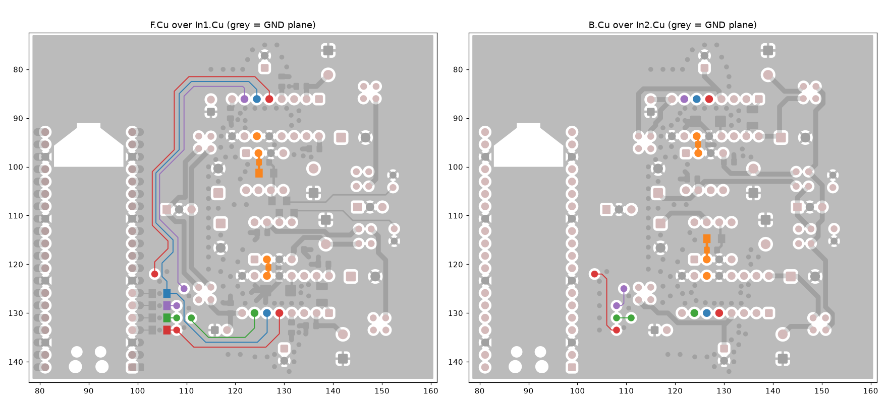
Частота Pico задаёт моменты выборки
В ЦАП без передискретизации каждая выборка появляется на выходе в момент спада LE, поэтому любая ошибка во времени спада LE становится ошибкой амплитуды. LE формирует программа PIO, а PIO тактируется от системной частоты через дробный делитель 16.8. В даташите он описан как дельта-сигма первого порядка: чтобы получить нецелое отношение, он растягивает часть периодов с n до n+1 системных тактов. При частоте SDK по умолчанию 125 МГц для 44,1 кГц нужно 2834,47 такта на выборку, поэтому фронты LE ложатся на сетку тактов по 8 нс по повторяющемуся шаблону.
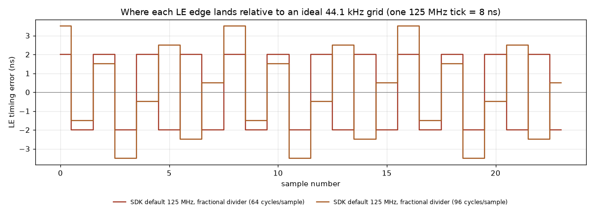
Модель сдвигает каждую ступеньку выходного сигнала ЦАП на ошибку её LE и считает спектр выхода для тона −1 dBFS. Выход квантован до 20 бит, так что собственный порог AD1862 виден для сравнения.
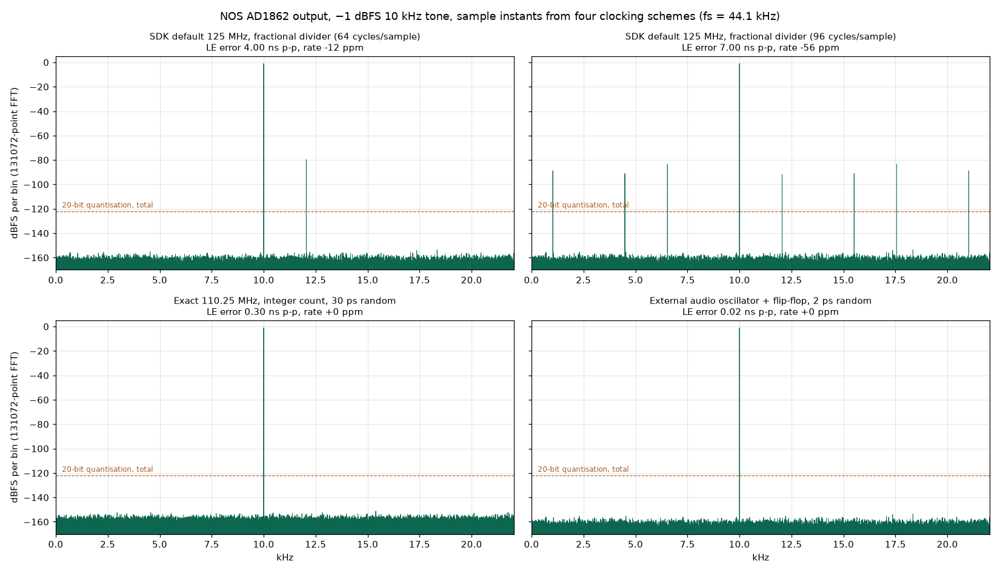
| Схема тактирования | Ошибка LE | Тон 1 кГц | 10 кГц | 20 кГц | Отклонение частоты |
|---|---|---|---|---|---|
| 125 МГц, дробный делитель, 64 такта на выборку | 4 нс размах | вне полосы* | −80 dBFS | −76 dBFS | −12 ppm |
| 125 МГц, дробный делитель, 96 тактов на выборку | 7 нс размах | −98 dBFS | −79 dBFS | −75 dBFS | −56 ppm |
| Точно 110,25 МГц, принято 30 пс случайного | 30 пс скз | −136 dBFS | −117 dBFS | −113 dBFS | 0 |
| Аудиогенератор + триггер, ~2 пс | 2 пс скз | −159 dBFS | −140 dBFS | −137 dBFS | 0 |
Значения — суммарная ошибка от джиттера в полосе 20 Гц – 20 кГц относительно полной шкалы, для тона −1 dBFS при 44,1 кГц. * При 64 тактах шаблон чередуется каждую выборку, и ошибка тона 1 кГц попадает на 21,05 кГц, чуть выше звуковой полосы. Где окажутся паразитные составляющие, зависит от деталей прошивки.
С точной частотой остаётся случайный джиттер от PLL и выходных выводов Pico. В даташите его значения нет, поэтому график ниже показывает, во что обходится любая его величина. Чтобы остаться ниже порога AD1862 (~−120 дБ), нужно около 10 пс скз для полномасштабного тона 20 кГц или около 160 пс на 1 кГц. Хороший аудиогенератор с перетактированием через триггер даёт единицы пикосекунд.
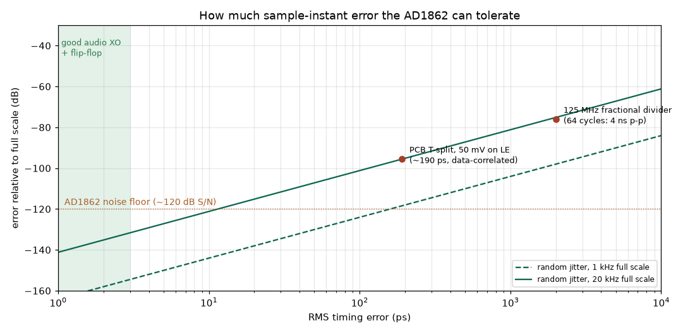
Фронты CLK и LE на выводах AD1862
CLK и LE выходят каждый с одного вывода Pico, проходят один резистор 33 Ом и разветвляются. CLK идёт 27,8 мм до U1 и 80,2 мм до U2; LE — 31,9 и 65,3 мм. Поэтому ближний ЦАП получает фронт в два шага: половина перепада приходит сразу, а остальное ждёт отражения из дальней ветви. При быстром фронте эта ступенька попадает внутрь входной пороговой зоны 0,8–2,0 В.
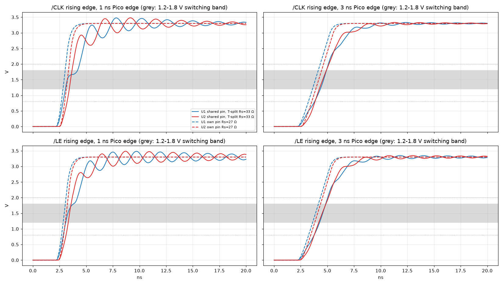
| Линия · фронт | Топология | Время в 1,2–1,8 В, U1 | Сдвиг момента на мВ шума, U1 | U2 |
|---|---|---|---|---|
| CLK · 1 нс | общий, Т-разветвление (как сейчас) | 1,14 нс | 13,9 пс/мВ | 0,47 пс/мВ |
| LE · 1 нс | общий, Т-разветвление (как сейчас) | 0,74 нс | 3,84 пс/мВ | 0,51 пс/мВ |
| CLK или LE · 1 нс | свой вывод на ЦАП, 27 Ом | 0,20 нс | 0,35 пс/мВ | 0,35 пс/мВ |
| CLK · 3 нс | общий, Т-разветвление (как сейчас) | 0,57 нс | 1,15 пс/мВ | 1,17 пс/мВ |
| LE · 3 нс | общий, Т-разветвление (как сейчас) | 0,57 нс | 1,09 пс/мВ | 1,19 пс/мВ |
| CLK или LE · 3 нс | свой вывод на ЦАП, 27 Ом | 0,55 нс | 0,92 пс/мВ | 0,92 пс/мВ |
Что это значит для звука. Пусть на LE во время его спада на U1 при быстрых фронтах лежит 50 мВ шума, коррелированного с данными. Это сдвигает момент выборки примерно на 190 пс, что для полномасштабного тона 20 кГц даёт ошибку около −96 dBFS — далеко выше собственного шумового порога AD1862 (~−120 дБ). Соединение точка-точка снижает её примерно до −116 dBFS. Остановка тактов убирает сам источник шума.
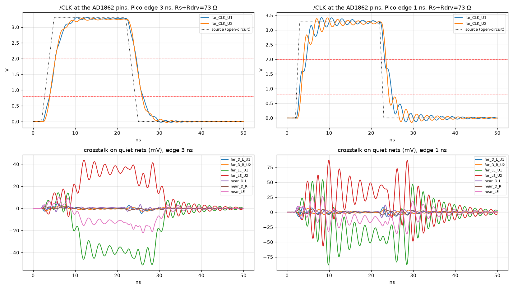
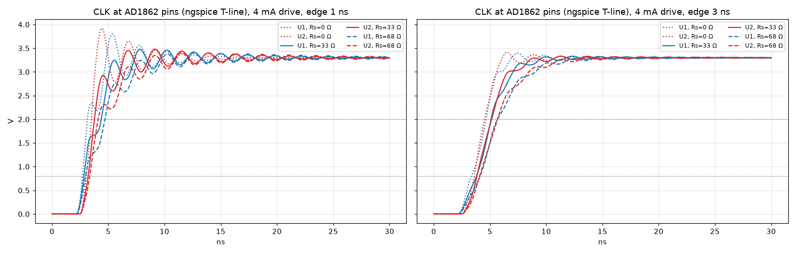
Может ли другая разводка что-то улучшить?
В аналоговой части — нет. Суммирующие узлы длиной 3,4 мм, оба земляных слоя сплошные, а цифровая наводка на суммирующие узлы — малая доля МЗР. Два рычага находятся в цифровой части: как одна линия CLK или LE разводится на два ЦАП и какие линии идут рядом в шине.
Разводка LE (и CLK) на два ЦАП
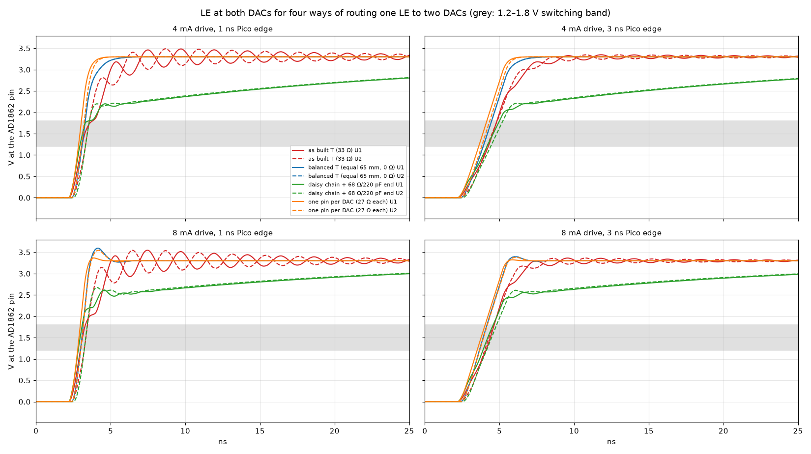
| Разводка (сдвиг момента на мВ шума) | 4 мА, 1 нс: U1 / U2 | 4 мА, 3 нс: U1 / U2 | 8 мА, 1 нс: U1 / U2 |
|---|---|---|---|
| Как сейчас: Т-разветвление у Pico, 33 Ом | 4,0 / 0,52 пс/мВ | 1,09 / 1,19 | 0,93 / 0,42 |
| Сбалансированное Т: равные ветви по 65 мм, 0 Ом | 0,38 / 0,38 | 0,97 / 0,97 | 0,32 / 0,32 |
| Последовательная цепочка Pico → U1 → U2, 68 Ом + 220 пФ на конце | 9,9 / 0,53 | 1,46 / 1,38 | 0,50 / 0,36 |
| Свой вывод Pico на каждый ЦАП, по 27 Ом | 0,35 / 0,35 | 0,92 / 0,92 | 0,31 / 0,32 |
Сбалансированное Т-разветвление не хуже второго вывода Pico. Обе ветви одной длины (около 65 мм, так что ветвь к U1 получает меандр), и последовательного резистора нет, потому что собственное выходное сопротивление Pico, около 40 Ом, примерно согласовано с двумя параллельными ветвями по 68 Ом. Последовательная цепочка с RC-окончанием на конце выглядит заманчиво: не нужен лишний вывод и нет постоянного тока. Но при штатном токе 4 мА первая ступенька останавливается около 2,2 В, и ближний ЦАП работает хуже, чем сейчас. При медленных фронтах 3 нс все четыре варианта отличаются не больше чем на 1 пс/мВ.
Какие линии идут рядом
CLK и LE идут рядом с шагом 0,71–1,24 мм на протяжении 62 мм: 52 мм на ветвях к U2 и 10,6 мм на ветвях к U1. 2D-решатель поля даёт связь на миллиметр. В модели связанных линий обоих деревьев он воспроизводит полноволновый расчёт платы с точностью 15 % при фронтах 1 нс (61–64 мВ против 71–73 мВ) и занижает примерно на 40 % при 3 нс, поэтому таблица сравнивает варианты по отношению.
| Компоновка шины | Наводка на LE у U1, фронты 3 нс | фронты 1 нс | относительно текущей |
|---|---|---|---|
| Как сейчас: CLK рядом с LE, шаг ~0,9 мм | 17 мВ | 61 мВ | 1× |
| Шаг CLK–LE 2 мм | 3 мВ | 11 мВ | ÷5,5 |
| D_R между CLK и LE (поменять LE и D_R) | 3 мВ | 11 мВ | ÷5,5 |
| Заземлённая защитная трасса между ними, с переходными | 2 мВ | 8 мВ | ÷7,5 |
| LE на B.Cu (между ними два слоя земли) | ≈ 0 | ≈ 0 | — |
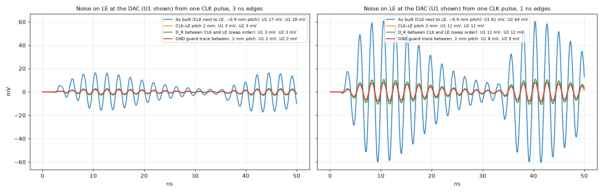
Поменять местами LE и D_R — самое дешёвое изменение: та же медь, другой порядок. Если прошивка останавливает тактирование до спада LE, эта наводка всё равно не попадает в момент выборки, так что разводка — подстраховка на случай прошивки, которая тактирование не останавливает.
Рефлектометрия (TDR) и входной импеданс дерева CLK
Со стороны резистора 33 Ом драйвер видит 26–46 Ом на первых сантиметрах: две ветви по 67 Ом параллельно, ещё ниже из-за переходных отверстий и выводов ЦАП. Во входном импедансе резкие антирезонансы на 405 МГц и около 930 МГц. На этих частотах источник не может поглощать энергию, поэтому дерево и продолжает звенеть. Пространственное разрешение этой TDR около 25 мм — его задаёт полоса моделирования 1,4 ГГц.
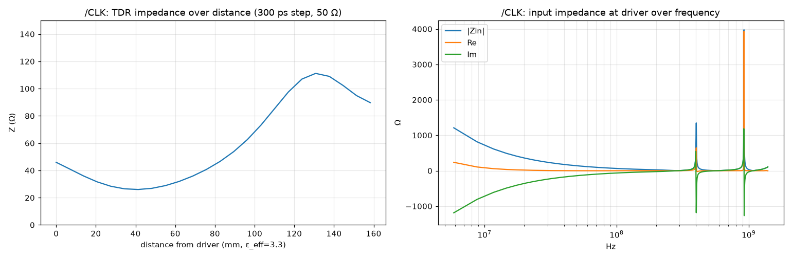
Сколько цифрового шума доходит до аналоговой части
Суммирующий узел I/V (вывод 11 AD1862 — вывод 2 OPA134) в каждом канале длиной всего 3,4 мм и лежит в стороне от шины. Один импульс CLK вносит в него пиковый ток 0,10–0,32 мкА. Суммарный заряд за фронт — около 0,5 фКл в левом канале и 0,2–0,3 фКл в правом. Один МЗР, удерживаемый одну выборку при 44,1 кГц, — это 43 фКл. Допустим, на выборку приходится 32 фронта тактов и все они складываются, а не компенсируются парами нарастающий/спадающий: это около 0,7 нА среднего тока, примерно −123 дБ относительно полной шкалы ±1 мА. На практике пары в основном компенсируются.
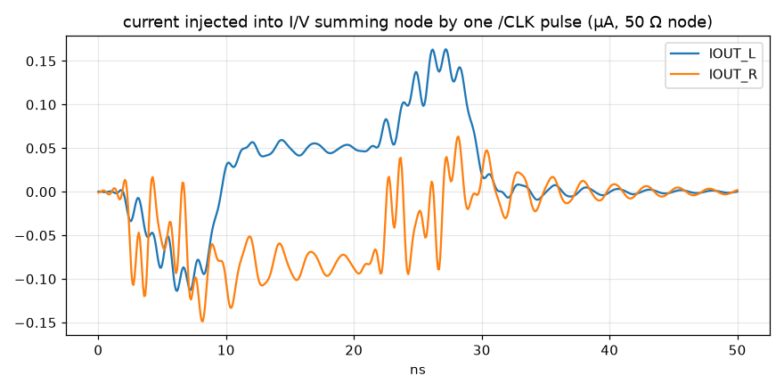
Когда активен LE
Спад LE — момент, когда AD1862 обновляет выход, поэтому во втором полноволновом прогоне активным был LE, а CLK молчал. Фронт LE вносит около 0,5 фКл в левый суммирующий узел и 0,1–0,2 фКл в правый. Это происходит раз за выборку и одинаково каждую выборку, то есть не зависит от данных. В пересчёте на средний ток это около 20 пА, примерно −154 дБ относительно полной шкалы.
В свою очередь LE наводит на CLK у U1 31 мВ (фронт 3 нс) или 67 мВ (фронт 1 нс). Это намного ниже порога переключения ~1,4 В, так что ложный бит не защёлкнется. На графике для 1 нс также видна полка от Т-разветвления на спаде LE у U1, около 1,65 В. Именно этот фронт защёлкивает ЦАП.
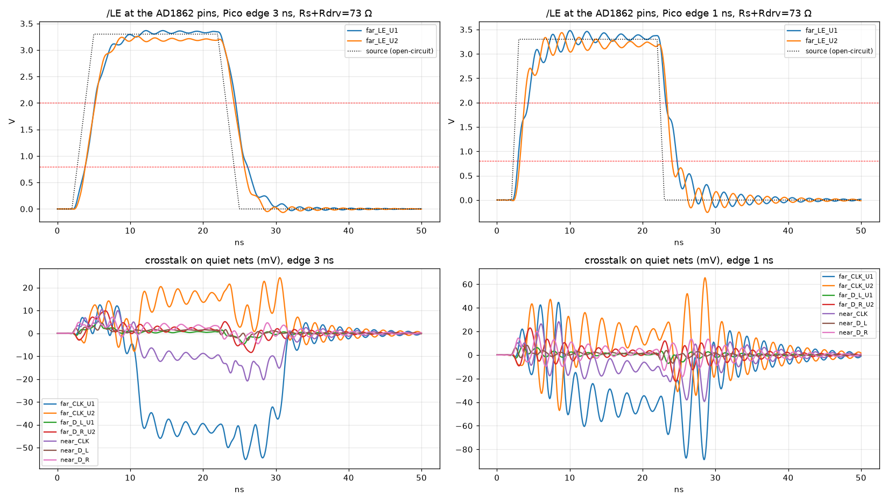
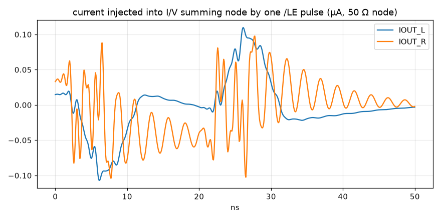
Когда активна линия данных
Ещё два полноволновых расчёта платы с активными D_L и D_R. Каждый фронт данных вносит 0,59–0,61 фКл (D_L) или 0,18–0,31 фКл (D_R) в суммирующий узел своего канала, 0,02 и 0,01 фКл в другой и не более 57 мВ на CLK или LE. Наводка на суммирующий узел должна исчезать на постоянном токе, поэтому за целую выборку заряд зависит только от того, изменился ли уровень линии: не больше одного фронта, около 0,6 фКл. Это меньше 27 пА тока, коррелированного с данными, примерно −150 дБ относительно полной шкалы.
ОУ каскада I/V на ступеньках ЦАП без передискретизации
ЦАП без передискретизации подаёт на каскад I/V ступенчатый сигнал. На громком тоне 20 кГц каждая ступенька — почти полномасштабный скачок 2 мА за десятки наносекунд. ОУ не успевает мгновенно, поэтому на короткое время ток ЦАП уходит в конденсаторы обратной связи и суммирующего узла, и суммирующий узел, обычно отстоящий от нуля на микровольты, скачет. С OPA134 и 47 пФ скачок около 0,6 В, за пределами линейного диапазона входного каскада.
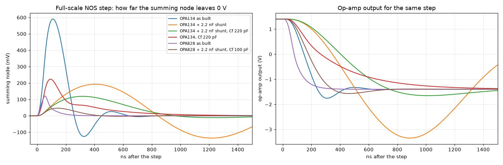
| Вариант каскада I/V | Запас по фазе | Скачок суммирующего узла | Ошибка от скорости нарастания, 10 кГц | 20 кГц | С/Ш |
|---|---|---|---|---|---|
| OPA134 как сейчас, 47 пФ | 45° | 591 мВ | −72 dBFS | −60 dBFS | 115,6 дБ(A) |
| OPA134 + 2,2 нФ на суммирующем узле | 12° | 193 мВ | −92 | −81 | 115,6 |
| OPA134 + 2,2 нФ + 220 пФ в обратной связи | 51° | 119 мВ | −100 | −89 | 115,6 |
| OPA134, 220 пФ в обратной связи | 51° | 223 мВ | −113 | −103 | 115,6 |
| OPA828 как сейчас, 47 пФ | 56° | 121 мВ | −153 | −142 | 119,8 |
| OPA828, встроенные 3 кОм ∥ 47 пФ (2,1 В скз) | 60° | 141 мВ | −147 | −136 | 122,2 |
Ошибка от скорости нарастания — внутриполосная ошибка, вызванная только этим ограничением, для тона −1 dBFS. На 1 кГц она во всех случаях ниже −130 dBFS. Время переключения ЦАП принято 50 нс; выводы сохраняются от 20 до 150 нс.
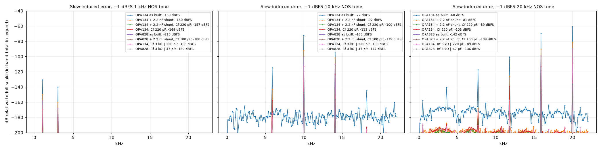
Собственная модель OPA134 от TI даёт для текущего каскада более мягкую цифру: −107 dBFS на 20 кГц вместо −60. Она остаётся идеально линейной вплоть до жёсткого предела скорости нарастания, тогда как реальный вход на полевых транзисторах изгибается постепенно. Обе модели согласны, что суммирующий узел скачет примерно на полвольта (509 мВ в модели TI) и что 220 пФ устраняют ошибку (−125 dBFS по модели TI). Собственный шум каскада — 14,7 нВ/√Гц на выходе: 8 нВ/√Гц у OPA134, умноженные на шумовое усиление 1,67, плюс тепловой шум 1,4 кОм и выходных 2,1 кОм ЦАП.
Какой ОУ и один корпус или два
Восемь ОУ, которые часто ставят в каскад I/V с AD1862. Каждый проверен как сейчас, с конденсатором обратной связи по его скорости нарастания (Cf ≥ 4 мА ÷ скорость нарастания) и со встроенным резистором AD1862 на 3 кОм. Полоса единичного усиления, скорость нарастания и шум взяты из даташитов; запас по фазе и входная ёмкость приняты 60° и 5 пФ там, где не опубликованы. PSpice-модели TI перепроверяют шесть из них, а LTspice добавляет OPA1656, ADA4898 вместо AD797 и ADA4625-1 (ниже).
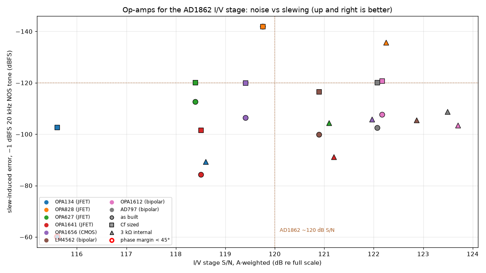
| ОУ | Вход | Cf | С/Ш, 1,4 кОм / 3 кОм | Ошибка на 20 кГц, обобщённая модель: как сейчас → Cf по расчёту | Модель производителя: как сейчас → Cf по расчёту | Одиночный в DIP-8? |
|---|---|---|---|---|---|---|
| OPA134 (сейчас) | JFET | 220 пФ | 115,6 / 118,6 | −60 → −103 | −107 → −125 | да |
| OPA828 | JFET | 47 пФ | 119,8 / 122,2 | −142 → −142 | −139 | нет (SOIC, VSSOP) |
| OPA627 | JFET | 82 пФ | 118,4 / 121,1 | −113 → −120 | −148 → −132 | да |
| OPA1641 | JFET | 220 пФ | 118,5 / 121,2 | −84 → −102 | −101 → −124 | нет |
| OPA1656 | КМОП | 180 пФ | 119,4 / 122,0 | −106 → −120 | −97 → −117 (LTspice) | нет |
| LM4562 | биполярный | 220 пФ | 120,9 / 122,9 | −100 → −117 | модели TI нет | только сдвоенный |
| OPA1611 / OPA1612 | биполярный | 150 пФ | 122,2 / 123,7 | −108 → −121 | −137 → −123 | нет (SOIC) |
| AD797 | биполярный | 220 пФ | 122,1 / 123,5 | −103 → −120 | −91 → −104 (LTspice) | да |
С/Ш — со взвешиванием A относительно полной шкалы; у самого AD1862 около 120 дБ. Ошибка — в dBFS для тона −1 dBFS. Значения модели TI ниже примерно −120 dBFS — это предел метода и означают «измеримого ограничения нет». Корпуса указаны по каталогам производителей; проверьте наличие перед заказом.
Рекомендация: OPA828 со встроенным резистором 3 кОм. Это единственный ОУ, который обе модели показывают чистым с текущими 47 пФ. Он даёт 122 дБ(A), а входной ток его полевого входа пренебрежимо мал. OPA1611 примерно на 1,5 дБ тише, но требует 150 пФ. OPA627 встаёт прямо в DIP-панельку ценой примерно 1,5 дБ шума. OPA134 остаётся пригодным с 220 пФ. ADA4625-1 — равноценная замена OPA828 (см. LTspice ниже). Я бы не брал OPA1641 (упирается в скорость нарастания, как OPA134), LM4562 (сдвоенный), OPA1656 (упирается в скорость нарастания при 47 пФ и сильнее всех искажает даже со 180 пФ) и AD797 (собственная модель ADI при 47 пФ упирается в скорость нарастания, как OPA134; со 220 пФ запас по фазе падает до 43°, а ошибка остаётся около −100 dBFS).
Модели производителей в LTspice
LTspice запускает четыре модели, с которыми не справился ngspice: OPA1656 от TI, которая там так и не сошлась; собственную модель AD797 от ADI — макромодель 1992 года, которой нет в LTspice (analog.com отдаёт её после принятия лицензии); ADA4898 от ADI — более новый биполярный ОУ того же класса (0,9 нВ/√Гц, 65 МГц, устойчив при единичном усилении); и ADA4625-1 от ADI, малошумящий ОУ с полевым входом. OPA134 и OPA828 повторяют расчёты ngspice для проверки: запас по фазе, ступенька в суммирующем узле и ошибка от скорости нарастания совпадают с точностью до 0,6 дБ там, где ошибка выше −110 dBFS. LTspice также использует собственный шум моделей, чего не мог ngspice. Он совпадает с оценками по даташитам выше с точностью до 1 дБ.
| ОУ | Модель | Cf по расчёту | С/Ш, 1,4 / 3 кОм | Суммирующий узел (мВ) | 20 кГц, 1,4 кОм | 20 кГц, 3 кОм | Запас по фазе |
|---|---|---|---|---|---|---|---|
| OPA134 | TI, JFET | 220 пФ | 115,5 / 118,5 | 509 → 209 | −107 → −121 | −106 → −115 | 52–70° |
| OPA828 | TI, JFET | 47 пФ | 119,8 / 122,3 | 104 | −136 | −125 | 72–75° |
| OPA1656 | TI, КМОП | 180 пФ | 120,4 / 122,8 | 291 → 64 | −97 → −117 | −88 → −97 | 50–55° |
| AD797* | ADI 1992, биполярный | 220 пФ | 122,0 / 123,4 | 258 → 20 | −91 → −104 | −79 → −99 | 43–49° |
| ADA4898 | ADI, биполярный | 82 пФ | 120,8 / 122,0 | 69 → 48 | −119 → −108 | −106 → −103 | 60–63° |
| ADA4625‑1 | ADI, JFET | 100 пФ | 120,7 / 123,0 | 260 → 159 | −136 → −126 | −126 → −121 | 58–66° |
Пары значений: 47 пФ → Cf по расчёту. С/Ш — в дБ(A) относительно полной шкалы, ошибка от скорости нарастания — в dBFS для тона −1 dBFS без передискретизации (метод масштабирования). Для сравнения: собственный КНИ+Ш AD1862 на полной шкале составляет −94…−98 дБ. * Модель AD797 — 1992 года: она воспроизводит скорость нарастания, полосу, фазу и шум, но входной и выходной каскады в ней поведенческие, поэтому её цифры искажений — ориентировочные.
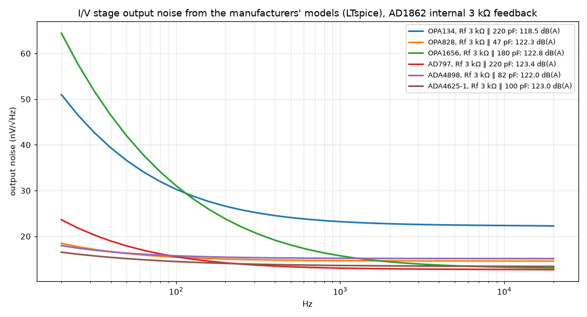
- OPA1656: при 47 пФ упирается в скорость нарастания (суммирующий узел 291 мВ, −97 dBFS на 20 кГц) и требует 180 пФ. С 3 кОм остаётся около −97 dBFS даже так — худший из пяти.
- AD797 (модель ADI 1992 года): самый тихий здесь, 122,0/123,4 дБ(A): на 1,3–2,2 дБ лучше ADA4625-1 и OPA828 с 1,4 кОм, но всего на 0,4–1,1 дБ с 3 кОм. При 20 В/мкс он с 47 пФ упирается в скорость нарастания, как OPA134: суммирующий узел 258 мВ, −91 dBFS на 20 кГц, −79 dBFS с 3 кОм. 220 пФ убирают ограничение скорости (суммирующий узел 20 мВ), но приближают каскад к единичному шумовому усилению, где у AD797 лишь 43–44° запаса по фазе, и ошибка остаётся на уровне −99…−104 dBFS и на 10, и на 20 кГц. Это согласуется с его репутацией капризного ОУ в этой схеме.
- ADA4898: самый малый размах в суммирующем узле (48–78 мВ) и 120,8/122,0 дБ(A) — всего примерно на 1 дБ лучше OPA828, потому что шум определяют сопротивление ЦАП 2,1 кОм и Rf. Как замена AD797 в модели он оказался слишком оптимистичным: при 55 В/мкс он не упирается в скорость нарастания с 47 пФ, а AD797 упирается. Его искажения растут с Cf и с 3 кОм, от −120 до −103 dBFS. Это всё ещё ниже собственных искажений AD1862, но заметно хуже полевых ОУ.
- ADA4625-1: запас по фазе 58–66°, 123,0 дБ(A) с 3 кОм и от −126 до −136 dBFS с уже стоящими 47 пФ. Не уступает OPA828 и тоже выпускается только в SOIC (или LFCSP).
- Больший Cf нужен только тем ОУ, которые упираются в скорость нарастания. У OPA828, ADA4898 и ADA4625-1 с 47 пФ результат лучше, чем со значением по скорости нарастания — вероятно, потому что с большим Cf выходному каскаду приходится перемещать больший заряд на каждой ступеньке.
Один сдвоенный ОУ на оба канала или по одиночному на канал
В прежней версии проекта (ветка dev) стоял один сдвоенный LM4562 на оба канала. На текущей плате у каждого ЦАП свой одиночный ОУ. Суммирующий узел — виртуальная земля, поэтому любая паразитная ёмкость C от выхода другого канала даёт перекрёстную помеху 2π·f·C·Rf. Двухканальная модель в ngspice совпадает с этой формулой с точностью 0,1 дБ.
| Компоновка | Паразитная C | L↔R на 1 кГц | на 20 кГц |
|---|---|---|---|
| Два одиночных ОУ на расстоянии ~40 мм (эта плата) | ~0,002 пФ | −155 дБ | −129 дБ |
| Один сдвоенный в SOIC, короткие трассы | 0,05 пФ | −127 дБ | −101 дБ |
| Один сдвоенный, трассы суммирующих узлов сходятся к нему | 0,15 пФ | −118 дБ | −92 дБ |
| Один сдвоенный в DIP-панельке | 0,3 пФ | −112 дБ | −86 дБ |
| Внутри самого LM4562 (даташит) | — | −118 дБ | −112 дБ |
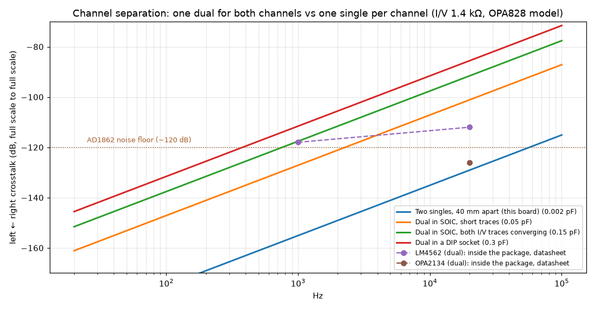
Общий сдвоенный ОУ к тому же удлиняет хотя бы одну трассу суммирующего узла с 3,4 мм до 15–40 мм, потому что ЦАП стоят примерно в 40 мм друг от друга, и ломает зеркальную разводку каналов. Оставьте по одиночному ОУ на канал. Сдвоенный ОУ на канал имеет смысл, только если вторая половина делает реальную работу, например сервоконтроль постоянного смещения или балансный выход.
Куда на самом деле уходит энергия CLK
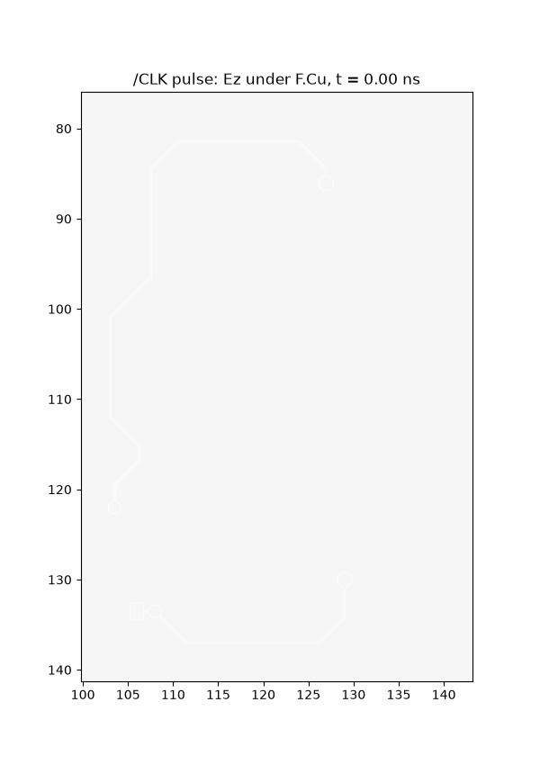
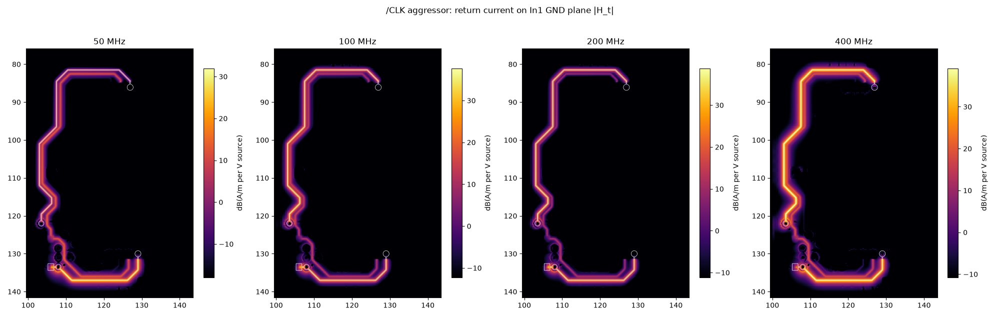
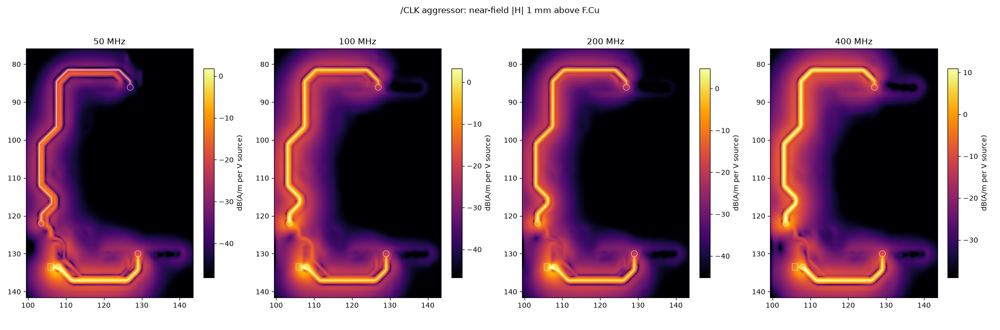
Падение напряжения на земле от собственного тока ЦАП
Лестница R‑2R возвращает зависящий от сигнала ток через выводы 9 и 12 AD1862. Любое напряжение на слое между этими выводами и опорной землёй ОУ прямо добавляется к выходу. При токе 1 мА от земляных выводов каждого ЦАП к разъёму питания J1 разница составляет 0,59 мкВ (левый) и 0,60 мкВ (правый). Это около 0,2 МЗР на мА на выходе, так что земляной слой не ограничивает.
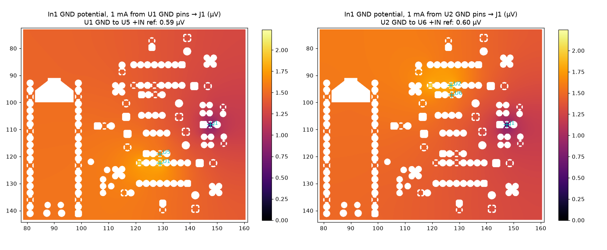
Развязка со стороны каждого вывода питания AD1862
У каждого вывода питания есть 100 нФ в 2,0–2,6 мм и электролит 47–100 мкФ в 4–7,5 мм. Выше 10 МГц кривую определяет индуктивность панельки DIP и выводов (около 4 нГн), которую никакие изменения платы не уберут. От 100 кГц до 5 МГц доминирует ESR электролитов с антирезонансом относительно 100 нФ около 4,5 МГц. 10 мкФ X7R рядом с каждым 100 нФ исправляет эту полосу.
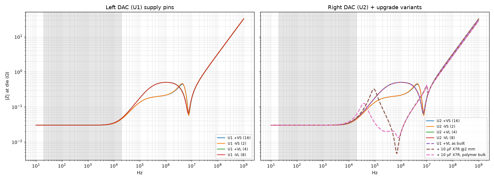
Какой стабилизатор для шин ±12 В
Шины ±12VA питают выводы ±VS обоих AD1862 и ОУ каскадов I/V. Они приходят извне платы, так что стабилизатор выбирает сборщик. В LTspice есть модели ADI для обычных кандидатов. Каждый работает от 15 В на нагрузку 25 мА через 20 мОм + 300 нГн проводов до развязки и вывода питания U1. Для пульсаций на входе 15 В задана пила 100 мВ размах на 100 Гц, как от накопительного конденсатора 2200 мкФ.
В даташите AD1862 подавление пульсаций питания не указано. Последний столбец показывает, сколько ему понадобилось бы, чтобы шина была безвредна: шум на 10 дБ ниже собственных 120 дБ С/Ш ЦАП, а тон пульсаций 100 Гц ниже −130 dBFS. Со стороны ОУ всё известно: модели TI дают подавление пульсаций питания каждого ОУ в каскаде I/V, и таблица переносит шум шины через него на выход.
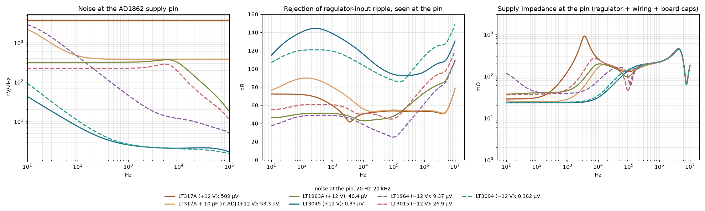
| Стабилизатор | Шина | Шум на выводе, 20 Гц–20 кГц (мкВ) | Подавление пульсаций на 100 Гц (дБ) | |Z| на 1 кГц (мОм) | На выходе OPA134 (dBFS, A) | AD1862 понадобилось бы (дБ): шум / пульсации |
|---|---|---|---|---|---|---|
| LT317A | +12 В | 509* | 72 | 128 | −118 | 63 / 25 |
| LT317A + 10 мкФ на ADJ | +12 В | 53,3* | 90 | 28 | −138 | 43 / 8 |
| LT1963A | +12 В | 40,4 | 51 | 45 | −145 | 41 / 47 |
| LT3045 | +12 В | 0,33 | 141 | 23 | −183 | не нужно / не нужно |
| LT1964 | −12 В | 9,4 | 48 | 39 | −203 | 18 / 49 |
| LT3015 | −12 В | 26,9 | 60 | 49 | −182 | 38 / 37 |
| LT3094 | −12 В | 0,36 | 120 | 24 | −217 | не нужно / не нужно |
* В модели LT317A шума почти нет. В этих строках вместо неё взяты 0,003 % от Vвых по даташиту. С 10 мкФ на ADJ шум опорного источника попадает на выход с усилением 1, а не ×9,6. Собственный шум каскада на OPA134 — −115,5 dBFS(A).
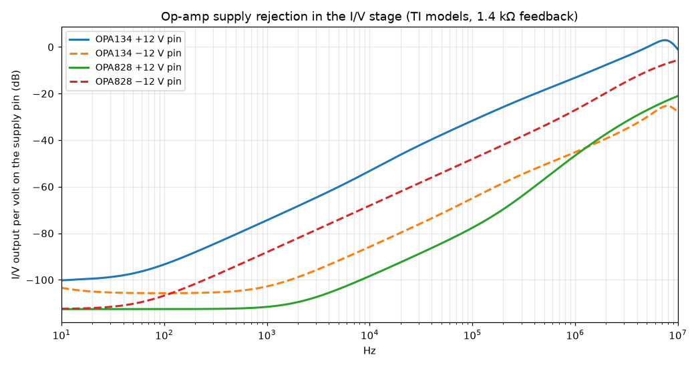
- LT3045 + LT3094: 0,33 и 0,36 мкВ на выводе. Подавлять нечего: шины ниже собственного шума AD1862, даже если ЦАП пропускает их напрямую. Модели показывают 120–145 дБ подавления пульсаций на 100 Гц; на реальной плате разводка и обратные токи по земле ограничат это задолго до того, как это станет важно.
- Стабилизатор типа LM317 без конденсатора на ADJ: единственный случай, заметный на выходе I/V. С OPA134 он стоит около 2 дБ С/Ш, а импеданс шины даёт пик 0,9 Ом около 3,5 кГц. С 10 мкФ на ADJ шум падает в десять раз, а пик исчезает.
- LT1963A, LT1964, LT3015: 9–40 мкВ шума и 48–60 дБ подавления пульсаций. ОУ с этим легко справляются, но AD1862 понадобилось бы 18–41 дБ подавления для шума и 37–49 дБ для пульсаций, а есть ли они у него, никто не знает.
- Те же рассуждения относятся к шинам ±5 В VL, для которых подавление тоже не опубликовано.
Допущения, которые стоит помнить
- Выходное сопротивление RP2040 (40 Ом при 4 мА) и входная ёмкость AD1862 (5 пФ с панелькой) — типовые значения, не измеренные. Выводы сохраняются во всём переборе 2–12 мА.
- Суммирующий узел на высоких частотах смоделирован как 50 Ом. Реальный узел — вход OPA134 параллельно с 47 пФ на землю и 47 пФ на выход, так что фактический ток может быть немного больше или меньше.
- Медь — лист нулевой толщины, без паяльной маски. Реальная медь 35 мкм с маской снижает Z0 с 73,8 Ом примерно до 65 Ом, что лишь немного укорачивает полку.
- Модель тактирования точно воспроизводит шаблон делителя. Случайный джиттер PLL и выходов RP2040 Raspberry Pi не указывает; случаи 30 пс и 2 пс — допущения, а график показывает цену любой величины.
- Исправление от 30 окт 2026: в прежней версии страницы наводка CLK→LE была указана как 51–88 мВ, а заряд в суммирующий узел — как 0,5–0,8 фКл. Эти значения включали паразитную низкочастотную составляющую, оставшуюся после продления расчётных сигналов. После её удаления (наводка на неактивную линию должна исчезать на постоянном токе) они равны 25–73 мВ и 0,2–0,6 фКл.
- Результаты по каскаду I/V получены на моделях ОУ по даташитам и на собственных PSpice-моделях TI для шести ОУ. Модели расходятся в том, насколько ограничение скорости нарастания искажает сигнал: модели TI линейны вплоть до жёсткого предела, обобщённая модель сжимает сигнал постепенно. Поэтому цифры искажений каскада I/V — это диапазон. Обе модели согласны, какие ОУ упираются в скорость нарастания и что 220 пФ это устраняют. Выходная ёмкость AD1862 (20 пФ) и время переключения (50 нс; проверено от 20 до 150 нс) приняты допущениями. Модель OPA1656 не запускается в ngspice, а шумовые модели TI там не работают, поэтому шум взят по даташитам.
- Результат по AD797 получен на макромодели ADI 1992 года (лицензия принята на analog.com; сам файл не распространяется). Её сигнал ЦАП начинается с 0 А, потому что при некоторых входных токах модель не находит рабочую точку.
- LTspice запускает и модель OPA1656, и шумовые модели TI; шум по моделям совпадает с оценками по даташитам с точностью до 1 дБ.
- Результаты по стабилизаторам получены на моделях ADI в LTspice с принятыми проводами (20 мОм + 300 нГн), нагрузкой 25 мА и входом 15 В с пульсациями 100 мВ размах. В модели LT317A шума почти нет, поэтому взято значение из даташита. Подавление пульсаций выше примерно 100 дБ — цифра моделей; на реальной разводке его съедают обратные токи по земле. Подавление пульсаций питания у AD1862 неизвестно, отсюда столбец «понадобилось бы».
- Полноволновая модель — вырезка 43 × 65 мм. Модуль Pico и правый край платы в неё не входят.
- Карты полей относительные (на вольт источника). Они показывают, где концентрируется энергия, а не запас до норм ЭМС.
- Пункты с пометкой diyAudio — отчёты сборщиков со ссылками на номера сообщений; оценивайте их соответственно.